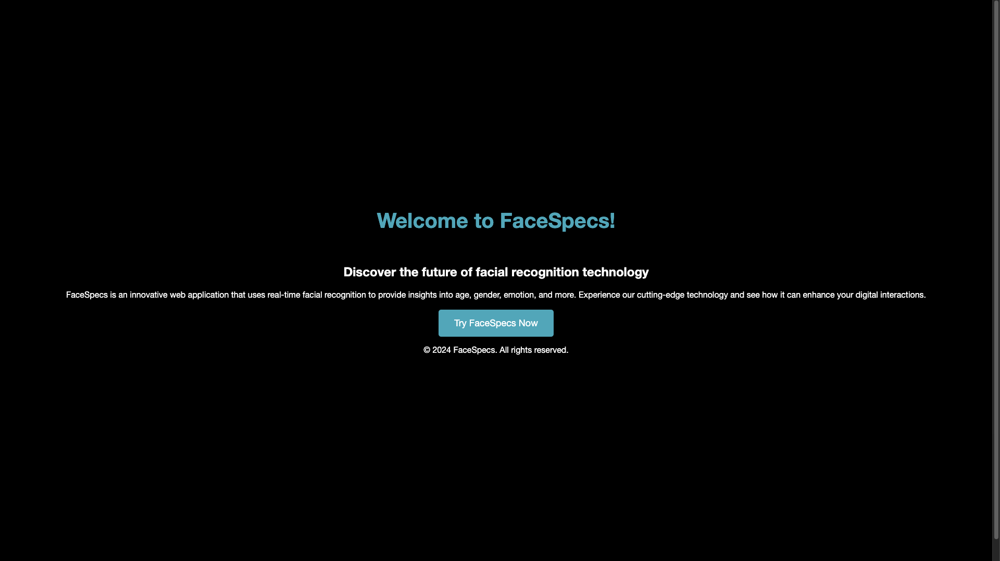
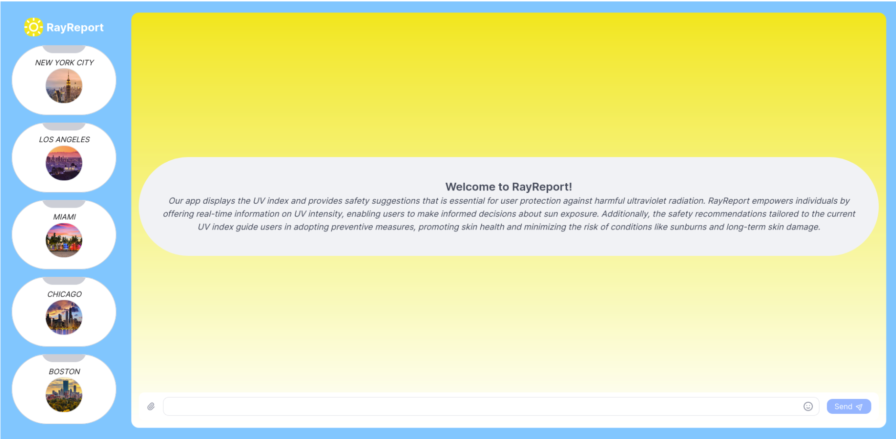

Mahathir Rojan
Software Engineer (Frontend & Full-Stack)

Software Engineer - Frontend & Full-Stack
I'm a Software Engineer, who is currently an IT Support Assistant at Hunter College, also where I have studied Computer Science (B.A., May 2025). I work across the stack with React, Next.js, Node.js, Express.js, Python, and SQL, and I care a lot about shipping clean, reliable interfaces that people use everyday.
Outside of work, I spend most of my time building real products: apps like MySubway, the Hunter Helpdesk Kiosk, and an NBA Fantasy analytics tool. These projects taught me how to design clean interfaces, build reliable backend APIs, and think about performance and usability for real users. My experience as an IT Support Assistant at Hunter College also gives me a practical understanding of how software behaves in production environments and what users actually need
Selected projects I've built across frontend, backend, mobile, and full-stack engineering.
Here are some of my featured projects that represent the products I enjoy building—tools with real users, clear purpose, and clean interfaces. You can find additional projects and experiments on my GitHub.

A digital check-in and queue system used by 20,000+ students, staff, and faculty at Hunter College. Built with Next.js, TypeScript, and PostgreSQL. Includes real-time queue logic, an admin dashboard, and a responsive kiosk interface to replace paper sign-in sheets.
**Link will be updated**

A real-time NYC subway tracker built with Swift and a Python backend. Integrates GTFS feeds, PostgreSQL, and custom arrival algorithms to deliver accurate train times and service alerts with a clean interface for commuters and tourists.
**Link will be updated**

A React + Firebase web application providing real-time performance stats and analytics for NBA players. Helps fantasy users make data-driven lineup decisions with fast lookups and clear UI.
**Link will be updated**

A Django + Next.js platform that uses OpenAI models to analyze movie trailers for emotion, pacing, and themes. Includes a survey engine and data visualizations to compare audience reactions with AI insights.
Earlier projects that explore AI, real-time APIs, and web development fundamentals.

A real-time facial attribute analyzer built with JavaScript and machine learning APIs. Processes live video to estimate age, gender, facial expression, and smile score through a simple, interactive UI.

A Next.js + Node.js application that provides real-time UV index data based on ZIP code, along with personalized outdoor activity suggestions. Uses external APIs for accurate environmental reporting.
Engineer focused on clarity, reliability, and building products that genuinely help people.
I care about building tools that feel intuitive and actually get used. My work on MySubway and the Hunter Helpdesk Kiosk taught me how to design interfaces that stay out of the way and deliver information quickly and clearly.
I’ve worked across teams during fellowships and at Hunter IT, where clear communication matters. I enjoy working with others to turn rough ideas into something polished and useful.
Whether debugging API inconsistencies, fixing GTFS parsing issues, or troubleshooting classroom systems at Hunter, I like breaking down problems and finding clean, practical solutions.
I stay curious testing new libraries, exploring Swift and Python backends, and constantly improving how I build. Each project pushes me into something new, which is the fun part of engineering.
Frontend: React, Next.js, TypeScript, JavaScript, Tailwind
Backend: Express.js, Node.js, Python (FastAPI/Flask)
Databases: PostgreSQL, Firebase
IT & Systems: Windows/macOS troubleshooting, networking, MFA, ServiceNow
I like taking an idea from a sketch to a working UI, refining it, and shipping something dependable. My IT background helps me think about edge cases, reliability, and how real users actually interact with software.